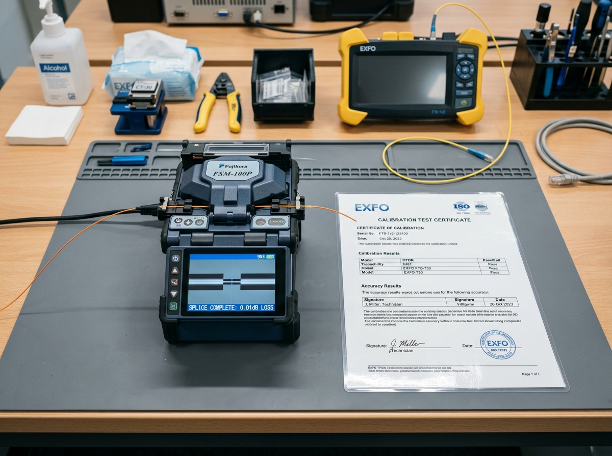

L4 Code: 9000-2-8 | 주관: 현장 시스템팀 / 협력업체 / 감리단 | "숙련 인력 & 장비 검교정 실무 가이드"
본 지침서는 공정별 통신 인력 수급, 광융착기/OTDR 시험 장비의 검교정 상태(1년 유효기간), 자재 야적장 보관 및 도로 굴착 교통통제 대책을 사전 심사·승인하는 4단계 실무 가이드입니다.
공정별 통신 인력, 장비 수급 및 자재 수량 사전 정밀 대조.
숙련 기술자 자격증 및 광융착기/OTDR 검교정 성적서(1년 이내) 검측.
자재 야적장 방수/방범 및 도로 굴착시 교통통제/민원 처리 대책 수립.
발주처·감리원 3자 서명 날인으로 자원 투입 계획서 최종 승인.
광융착기나 OTDR 측정기가 국가 표준 오차 기준 내에서 정확히 작동하는지 공인 기관에서 검사받는 필수 필증입니다. 검교정이 안 된 장비로 측정 시 잘못된 접속 손실 수치가 출력되어 정밀 하자가 발생합니다.
72-Core 가느다란 유리선을 녹이는 작업은 숙련된 기술자만이 오차 없이 수행할 수 있으며, 불량 접속으로 인한 재작업 비용 및 공기 지연을 사전에 예방합니다.
